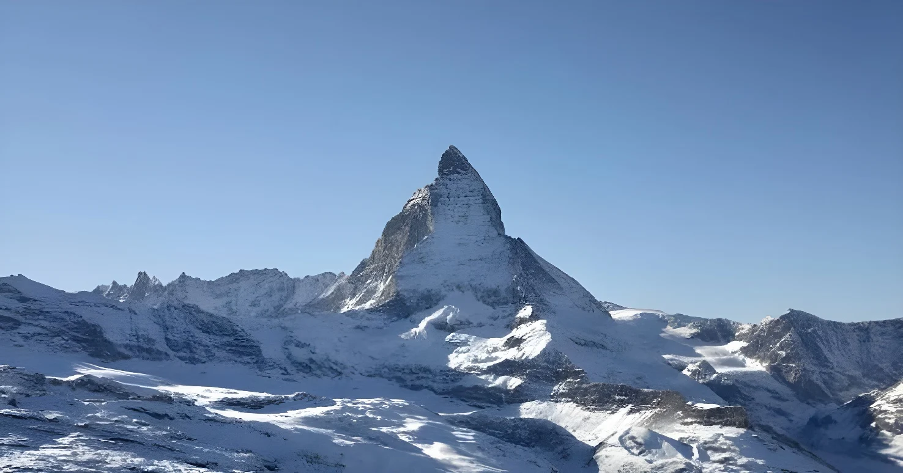

Le 1er octobre 2026, le Réseau suisse de mesure des glaciers (GLAMOS) et la Commission suisse de la cryosphère de l'Académie suisse des sciences naturelles (SCNAT) ont dressé le bilan de l'année glaciaire : plus de 5 % de la glace ont disparu, soit environ 2,5 km³ selon la presse, et près de 20 % en cinq ans. Un hiver très pauvre en neige et des vagues de chaleur de mai à septembre ont fait de 2026 un cru « extrême », juste derrière le record de 2022.
Selon le communiqué du 1er octobre, l'épaisseur moyenne de glace des glaciers mesurés a reculé de 2,5 à 4 mètres, et jusqu'à 10 mètres par endroits sur les langues glaciaires. Les chiffres de 5,5 % et de 2,5 km³ viennent de la presse suisse, qui les rapporte au bilan de GLAMOS ; le communiqué lui-même parle de « plus de 5 % ». Sur les quatre grands glaciers qui ont fait pire qu'en 2022 (Aletsch, Allalin, Clariden et Rhône), la fonte a atteint des niveaux jamais mesurés : jusqu'à 13 mètres de glace en moins au point le plus bas de l'Aletsch, à 1 980 mètres d'altitude.
L'année se place ainsi juste derrière 2022, où les glaciers avaient perdu environ 6 % de leur volume, et bien au-delà de 2025 (environ 3 %, quatrième plus forte perte depuis le début des mesures). Mises bout à bout, les cinq dernières années ont retiré près d'un cinquième de la glace suisse, une vitesse sans précédent dans les séries de mesure.
L'hiver 2025/26 compte parmi les dix hivers les moins neigeux depuis le début des mesures, à toutes les altitudes. De mai à septembre, chaque mois a connu de la sécheresse et au moins une période de chaleur, et l'isotherme du zéro degré a dépassé 4 000 mètres pendant 76 jours, plus du double de la moyenne. En septembre, il ne restait plus de neige à 3 500 mètres. Un facteur a joué en faveur des glaciers : moins de poussières du Sahara se sont déposées qu'en 2022, ce qui a limité l'assombrissement de la surface.
GLAMOS et la SCNAT publient le bilan : plus de 5 % de glace perdue, près de 20 % en cinq ans. Les glaciers de Bella Tola (Valais) et de Griessfirn/Plattalvafirn (Glaris) ont disparu.
Vagues de chaleur à répétition : 76 jours avec l'isotherme du zéro degré au-dessus de 4 000 m.
Un des dix hivers les moins neigeux depuis le début des mesures.
Bilan de GLAMOS pour 2025 : environ 3 % du volume perdu.
Un effondrement du glacier de Birch ensevelit une grande partie de Blatten, dans le Lötschental.
Entrée en vigueur de la loi sur le climat : objectif de zéro émission nette en 2050.
Année record : environ 6 % du volume des glaciers suisses perdu.
Le 28 mai 2025, l'effondrement du glacier de Birch, chargé par des éboulements du Kleines Nesthorn, a détruit environ 90 % du village de Blatten, dans le Lötschental (Valais), après l'évacuation ordonnée le 19 mai. Une personne est morte. Les glaciologues rappellent que le recul de la glace et le dégel du pergélisol fragilisent les parois rocheuses : pour Matthias Huss, cité par NPR, le changement climatique peut être un facteur déclenchant, le dernier élément manquant pour provoquer de tels événements.
Cette fragilité nourrit les inquiétudes sur les risques naturels dans les vallées alpines, où le dégel du permafrost accroît le risque d'éboulements et de glissements de terrain.
| Année | Perte de volume | Contexte |
|---|---|---|
| 2026 | ≈ 5,5 % | Deuxième pire année : hiver sec, chaleur de mai à septembre |
| 2025 | ≈ 3 % | Quatrième pire année : hiver peu neigeux, canicules en juin et en août |
| 2022 | ≈ 6 % | Record absolu depuis le début des mesures |
Selon la presse, il resterait environ 42,6 km³ de glace en Suisse et la surface englacée a perdu environ un tiers de son étendue depuis 2000. Les petits glaciers disparaissent les premiers, et NPR cite des projections selon lesquelles tous les glaciers suisses pourraient disparaître d'ici la fin du siècle si le réchauffement se poursuit au rythme actuel.
La Suisse s'est fixé le zéro émission nette en 2050 avec sa loi sur le climat, adoptée en votation en juin 2023 et en vigueur depuis le 1er janvier 2025. Les scientifiques de GLAMOS rappellent que seule une réduction mondiale et cohérente des gaz à effet de serre permettrait de préserver une partie des glaciers.
« Es war ein Extremjahr für die Gletscher. »
— Matthias Huss, glaciologue à l'ETH Zurich, responsable de GLAMOS (traduit de l'allemand : « Ce fut une année extrême pour les glaciers »)Les glaciers jouent le rôle de réservoir naturel : ils stockent la neige de l'hiver et la restituent l'été, quand les rivières et les barrages en ont le plus besoin. En fondant à un rythme record, ils fournissent aujourd'hui plus d'eau qu'ils n'en recevront demain : l'apport de 2026 est déjà inférieur à celui de 2003 malgré une fonte bien plus forte, signe que le pic d'eau de fonte est sans doute franchi. Pour un pays qui tire une grande part de son électricité de l'hydraulique, la vraie question n'est plus de savoir si la glace disparaîtra, mais comment gérer l'eau, les risques et les territoires de montagne dans un climat où la neige tient moins longtemps. Elle prolonge les sécheresses qui font baisser le Rhin, fleuve dont l'Alpe est la source.
Am 1. Oktober 2026 haben das Schweizerische Gletschermessnetz (GLAMOS) und die Schweizerische Kommission für Kryosphärenbeobachtung der Akademie der Naturwissenschaften Schweiz (SCNAT) die Bilanz des Gletscherjahres vorgelegt: Über 5 % des Eises sind verschwunden, laut Medien rund 2,5 km³, in fünf Jahren fast 20 %. Ein sehr schneearmer Winter und Hitzewellen von Mai bis September machten 2026 zu einem „Extremjahr“, knapp hinter dem Rekord von 2022.
Laut der Mitteilung vom 1. Oktober nahm die mittlere Eisdicke der gemessenen Gletscher um 2,5 bis 4 Meter ab, auf den Gletscherzungen stellenweise um bis zu 10 Meter. Die Zahlen von 5,5 % und 2,5 km³ stammen aus Schweizer Medien, die sie der GLAMOS-Bilanz zuordnen; die Mitteilung selbst spricht von „über 5 Prozent“. Bei vier grossen Gletschern, die 2022 übertroffen haben (Aletsch, Allalin, Clariden und Rhone), erreichte die Schmelze nie gemessene Werte: am tiefsten Messpunkt des Aletschgletschers auf 1.980 Metern Höhe schmolzen bis zu 13 Meter Eis.
Das Jahr liegt damit knapp hinter 2022, als die Gletscher rund 6 % ihres Volumens verloren, und weit über 2025 (rund 3 %, der viertgrösste Verlust seit Messbeginn). Zusammengenommen haben die letzten fünf Jahre fast ein Fünftel des Schweizer Eises gekostet, ein Tempo ohne Vorbild in den Messreihen.
Der Winter 2025/26 gehört auf allen Höhenstufen zu den zehn schneeärmsten seit Messbeginn. Von Mai bis September war jeder Monat von Trockenheit und mindestens einer Hitzeperiode geprägt, und die Nullgradgrenze lag an 76 Tagen über 4.000 Metern, mehr als doppelt so oft wie im Mittel. Im September gab es auf 3.500 Metern keinen Schnee mehr. Einen Faktor zugunsten der Gletscher gab es: Es lagerte sich weniger Saharastaub ab als 2022, was die Verdunkelung der Oberfläche begrenzte.
GLAMOS und SCNAT legen die Bilanz vor: über 5 % Eis verloren, fast 20 % in fünf Jahren. Der Bella-Tola-Gletscher (Wallis) und der Griessfirn/Plattalvafirn (Glarus) sind verschwunden.
Wiederholte Hitzewellen: 76 Tage mit der Nullgradgrenze über 4.000 m.
Einer der zehn schneeärmsten Winter seit Messbeginn.
GLAMOS-Bilanz für 2025: rund 3 % des Volumens verloren.
Der Zusammenbruch des Birchgletschers verschüttet einen grossen Teil von Blatten im Lötschental.
Das Klimagesetz tritt in Kraft: Ziel Netto-Null bis 2050.
Rekordjahr: rund 6 % des Volumens der Schweizer Gletscher verloren.
Am 28. Mai 2025 zerstörte der Zusammenbruch des Birchgletschers, der durch Felsstürze vom Kleinen Nesthorn belastet war, rund 90 % des Dorfes Blatten im Lötschental (Wallis), nachdem es am 19. Mai evakuiert worden war. Eine Person kam ums Leben. Die Glaziologen erinnern daran, dass der Rückgang des Eises und das Auftauen des Permafrosts die Felswände schwächen: Für Matthias Huss, zitiert von NPR, kann der Klimawandel ein auslösender Faktor sein, das letzte fehlende Stück für solche Ereignisse.
Diese Instabilität nährt die Sorge um Naturgefahren in den Alpentälern, wo das Auftauen des Permafrosts das Risiko von Felsstürzen und Erdrutschen erhöht.
| Jahr | Volumenverlust | Kontext |
|---|---|---|
| 2026 | ≈ 5,5 % | Zweitschlechtestes Jahr: trockener Winter, Hitze von Mai bis September |
| 2025 | ≈ 3 % | Viertschlechtestes Jahr: schneearmer Winter, Hitzewellen im Juni und August |
| 2022 | ≈ 6 % | Absoluter Rekord seit Messbeginn |
Laut Medien bleiben in der Schweiz noch rund 42,6 km³ Eis, und die vergletscherte Fläche ist seit 2000 um etwa ein Drittel geschrumpft. Die kleinen Gletscher verschwinden zuerst, und NPR zitiert Prognosen, wonach alle Schweizer Gletscher bis Ende des Jahrhunderts verschwinden könnten, wenn sich die Erwärmung im heutigen Tempo fortsetzt.
Die Schweiz hat sich mit ihrem Klimagesetz, im Juni 2023 an der Urne angenommen und seit dem 1. Januar 2025 in Kraft, das Ziel Netto-Null bis 2050 gesetzt. Die Fachleute von GLAMOS betonen, dass nur eine konsequente globale Reduktion der Treibhausgase einen Teil der Gletscher erhalten könnte.
„Es war ein Extremjahr für die Gletscher.“
— Matthias Huss, Glaziologe an der ETH Zürich, Leiter von GLAMOSGletscher wirken als natürlicher Speicher: Sie sammeln den Schnee des Winters und geben ihn im Sommer ab, wenn Flüsse und Stauseen ihn am meisten brauchen. Weil sie in Rekordtempo schmelzen, liefern sie heute mehr Wasser, als sie morgen noch liefern werden: Der Beitrag von 2026 liegt trotz weit stärkerer Schmelze schon unter dem von 2003, ein Zeichen dafür, dass der Höhepunkt des Schmelzwassers wohl überschritten ist. Für ein Land, das einen grossen Teil seines Stroms aus Wasserkraft gewinnt, lautet die eigentliche Frage nicht mehr, ob das Eis verschwindet, sondern wie Wasser, Risiken und Bergregionen in einem Klima bewirtschaftet werden, in dem der Schnee kürzer liegen bleibt. Sie verlängert die Dürren, die den Rhein sinken lassen, einen Fluss, dessen Quelle in den Alpen liegt.